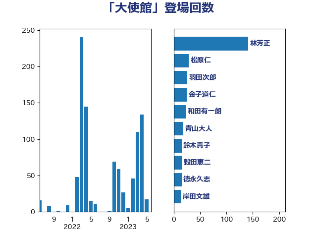

単語「大使館」

| 林芳正 | 自由民主党 | 141 回 |
| 松原仁 | 立憲民主党 | 29 回 |
| 羽田次郎 | 立憲民主党 | 26 回 |
| 金子道仁 | 日本維新の会 | 25 回 |
| 和田有一朗 | 日本維新の会 | 23 回 |
| 青山大人 | 立憲民主党 | 18 回 |
| 鈴木貴子 | 自由民主党 | 15 回 |
| 穀田恵二 | 日本共産党 | 15 回 |
| 徳永久志 | 立憲民主党 | 15 回 |
| 岸田文雄 | 自由民主党 | 14 回 |
| 齋藤健 | 自由民主党 | 11 回 |
| 音喜多駿 | 日本維新の会 | 11 回 |
| 松川るい | 自由民主党 | 11 回 |
| 石川大我 | 立憲民主党 | 10 回 |
| 大塚耕平 | 国民民主党 | 10 回 |
| 浅田均 | 日本維新の会 | 9 回 |
| 務台俊介 | 自由民主党 | 9 回 |
| 鈴木宗男 | 日本維新の会 | 8 回 |
| 高橋光男 | 公明党 | 7 回 |
| 金城泰邦 | 公明党 | 7 回 |
| 渡辺周 | 立憲民主党 | 6 回 |
| 大西健介 | 立憲民主党 | 6 回 |
| 鈴木敦 | 国民民主党 | 5 回 |
| 谷合正明 | 公明党 | 5 回 |
| 篠原豪 | 立憲民主党 | 5 回 |
| 田村智子 | 日本共産党 | 5 回 |
| 田島麻衣子 | 立憲民主党 | 5 回 |
| 柴田巧 | 日本維新の会 | 5 回 |
| 岡田克也 | 立憲民主党 | 5 回 |
| 山本剛正 | 日本維新の会 | 5 回 |
| 小西洋之 | 立憲民主党 | 5 回 |
| 吉田宣弘 | 公明党 | 5 回 |
| 藤岡隆雄 | 立憲民主党 | 4 回 |
| 葉梨康弘 | 自由民主党 | 4 回 |
| 緒方林太郎 | 無所属 | 4 回 |
| 石橋通宏 | 立憲民主党 | 4 回 |
| 清水貴之 | 日本維新の会 | 4 回 |
| 森本真治 | 立憲民主党 | 4 回 |
| 杉田水脈 | 自由民主党 | 4 回 |
| 山井和則 | 立憲民主党 | 4 回 |
| 小田原潔 | 自由民主党 | 4 回 |
| 八木哲也 | 自由民主党 | 4 回 |
| 仁比聡平 | 日本共産党 | 4 回 |
| 上田清司 | 国民民主党 | 4 回 |
| 青木愛 | 立憲民主党 | 3 回 |
| 金村龍那 | 日本維新の会 | 3 回 |
| 荒井優 | 立憲民主党 | 3 回 |
| 美延映夫 | 日本維新の会 | 3 回 |
| 篠原孝 | 立憲民主党 | 3 回 |
| 片山大介 | 日本維新の会 | 3 回 |
| 浜口誠 | 国民民主党 | 3 回 |
| 津島淳 | 自由民主党 | 3 回 |
| 松野博一 | 自由民主党 | 3 回 |
| 杉本和巳 | 日本維新の会 | 3 回 |
| 平木大作 | 公明党 | 3 回 |
| 小野泰輔 | 日本維新の会 | 3 回 |
| 寺田学 | 立憲民主党 | 3 回 |
| 堀井巌 | 自由民主党 | 3 回 |
| 佐藤啓 | 自由民主党 | 3 回 |
| 伊藤俊輔 | 立憲民主党 | 3 回 |
| 上杉謙太郎 | 自由民主党 | 3 回 |
| 馬場雄基 | 立憲民主党 | 2 回 |
| 青柳仁士 | 日本維新の会 | 2 回 |
| 鈴木義弘 | 国民民主党 | 2 回 |
| 鈴木庸介 | 立憲民主党 | 2 回 |
| 辻清人 | 自由民主党 | 2 回 |
| 谷川とむ | 自由民主党 | 2 回 |
| 西岡秀子 | 国民民主党 | 2 回 |
| 藤川政人 | 自由民主党 | 2 回 |
| 萩生田光一 | 自由民主党 | 2 回 |
| 磯崎仁彦 | 自由民主党 | 2 回 |
| 玄葉光一郎 | 立憲民主党 | 2 回 |
| 片山さつき | 自由民主党 | 2 回 |
| 源馬謙太郎 | 立憲民主党 | 2 回 |
| 渡辺博道 | 自由民主党 | 2 回 |
| 池畑浩太朗 | 日本維新の会 | 2 回 |
| 武井俊輔 | 自由民主党 | 2 回 |
| 榛葉賀津也 | 国民民主党 | 2 回 |
| 森山浩行 | 立憲民主党 | 2 回 |
| 梅村みずほ | 日本維新の会 | 2 回 |
| 松本剛明 | 自由民主党 | 2 回 |
| 本田太郎 | 自由民主党 | 2 回 |
| 山口那津男 | 公明党 | 2 回 |
| 山口壯 | 自由民主党 | 2 回 |
| 太栄志 | 立憲民主党 | 2 回 |
| 和田政宗 | 自由民主党 | 2 回 |
| 吉田はるみ | 立憲民主党 | 2 回 |
| 古川禎久 | 自由民主党 | 2 回 |
| 加藤勝信 | 自由民主党 | 2 回 |
| 上月良祐 | 自由民主党 | 2 回 |
| 黄川田仁志 | 自由民主党 | 1 回 |
| 鬼木誠 | 立憲民主党 | 1 回 |
| 高市早苗 | 自由民主党 | 1 回 |
| 馬場成志 | 自由民主党 | 1 回 |
| 阿達雅志 | 自由民主党 | 1 回 |
| 赤池誠章 | 自由民主党 | 1 回 |
| 西村康稔 | 自由民主党 | 1 回 |
| 若林健太 | 自由民主党 | 1 回 |
| 米山隆一 | 立憲民主党 | 1 回 |
| 空本誠喜 | 日本維新の会 | 1 回 |
| 稲田朋美 | 自由民主党 | 1 回 |
| 福重隆浩 | 公明党 | 1 回 |
| 福島伸享 | 無所属 | 1 回 |
| 福山哲郎 | 立憲民主党 | 1 回 |
| 神津たけし | 立憲民主党 | 1 回 |
| 田中健 | 国民民主党 | 1 回 |
| 牧山ひろえ | 立憲民主党 | 1 回 |
| 水野素子 | 立憲民主党 | 1 回 |
| 櫻井周 | 立憲民主党 | 1 回 |
| 木原誠二 | 自由民主党 | 1 回 |
| 有村治子 | 自由民主党 | 1 回 |
| 早稲田ゆき | 立憲民主党 | 1 回 |
| 新垣邦男 | 立憲民主党 | 1 回 |
| 市村浩一郎 | 日本維新の会 | 1 回 |
| 山田賢司 | 自由民主党 | 1 回 |
| 山添拓 | 日本共産党 | 1 回 |
| 山本太郎 | れいわ新選組 | 1 回 |
| 小熊慎司 | 立憲民主党 | 1 回 |
| 小池晃 | 日本共産党 | 1 回 |
| 宮崎雅夫 | 自由民主党 | 1 回 |
| 室井邦彦 | 日本維新の会 | 1 回 |
| 吉良州司 | 無所属 | 1 回 |
| 加田裕之 | 自由民主党 | 1 回 |
| 佐藤正久 | 自由民主党 | 1 回 |
| 世耕弘成 | 自由民主党 | 1 回 |
| 下野六太 | 公明党 | 1 回 |
| おおつき紅葉 | 立憲民主党 | 1 回 |